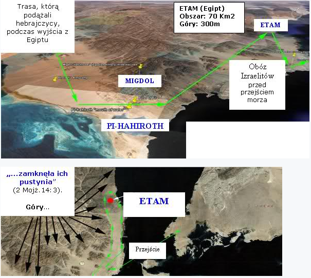
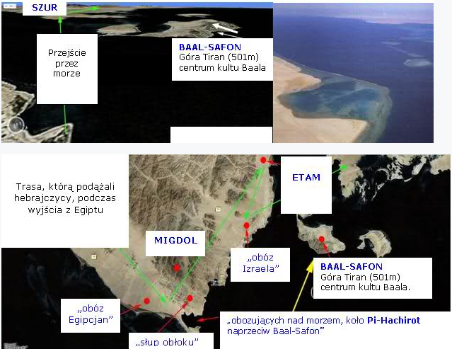
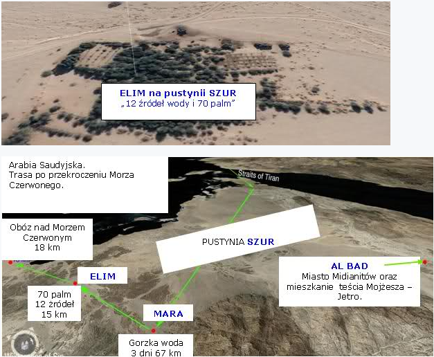

Prawdziwa góra Synaj (część 1)
Gdy nieomylny papież ogłasza, że góra w centrum Półwyspu Synaj w Egipcie, jest górą Mojżesza - górą Synaj, dobrym katolikom pozostaje – nic jak tylko ślepo zaakceptować i nie szukać gdzie indziej.
Podobnie ma się rzecz ze świadkami Jehowy i innymi ugrupowaniami…
Poza tym, ta góra przynosi ogromną fortunę, dzięki turystom, dlatego wielu zależy, aby tak pozostało i lokalizacja prawdziwej góry Synaj nigdy nie została ujawniona.
Dlatego nie dziwi też fakt, że od końca lat 80-tych prawdziwa góra i teren wokół niej są obszarem zastrzeżonym dla wojska.
Rząd Arabii Saudyjskiej z powodów religijnych i politycznych nie pozwala dziś zwiedzić tego miejsca turystom.
Nie godzi się nawet na zdjęcia lotnicze, a satelitarny obraz, który można obejrzeć na Google Maps, jest niezbyt dokładny.
Nie dziwi również fakt, że archeolodzy nie mogą znaleźć kompletnie żadnych dowodów na obecność Izraelitów pod fałszywą górą Synaj w Egipcie – szukają nie tam gdzie trzeba…
Wszystkie pustynie (Szur, Paran, Syn, Synaj) są całkowicie błędnie ulokowane na mapach w naszych Bibliach.
Góra Synaj (Horeb) w Egipcie również.
Wszelkie inne publikacje, w tym śJ (czyżby światło znów za słabo świeciło?) zawierają rażące błędy, jakby ślepota ogarnęła ludzi i nie widzieli słów z listu do Galicjan:
„A to jest powiedziane obrazowo: oznaczają one dwa przymierza, jedno z góry Synaj, które rodzi w niewolę, a jest nim Hagar. (25) Hagar jest to góra Synaj w Arabii; odpowiada ona teraźniejszemu Jeruzalem” (Gal.4:24-25).
Apostoł Paweł pisząc pod natchnieniem, wyraźnie umiejscawia górę Synaj w ARABII, a nie w EGIPCIE!
Zauważmy również, że w 1 Mojż.25:18, jest powiedziane, że Ismael będzie żył na wschód od Egiptu, czyli w Arabii, a nie w Egipcie.
Potomkowie Ismaela to Ismaelici, nazywani również Midianitami:
„ujrzeli karawanę Ismaelitów, przybywającą z Gileadu; (27) Chodźcie, sprzedajmy go Ismaelitom (28) Gdy więc przechodzili mężowie, kupcy midianiccy… (36) Midianici zaś sprzedali go w Egipcie putyfarowi” (zob. 1 Mojż.37:25-28, 36, 39:1, Sędziów 8:22-24).
Mojżesz, gdy przebywał w ziemi Midianitów, która znajduje się na Półwyspie Arabskim na wschód od zatoki Akaba, w czasie wypasu owiec swego teścia, dotarł do góry Horeb (Synaju):
„Gdy Mojżesz pasał trzodę teścia swego Jetry, kapłana Midianitów, pognał raz trzodę poza pustynię i przybył do góry Bożej, do Horebu.” (2 Mojż.3:1).
Tak, więc wydarzenia te rozgrywały się w Arabii, a nie w Egipcie.
Kiedy Mojżesz właśnie tam przebywał, czyli poza granicami Egiptu, Bóg rzekł do niego:
„I rzekł Pan do Mojżesza w ziemi Midianitów: Idź, wróć do Egiptu, bo zmarli wszyscy mężowie, którzy czyhali na twoje życie. (20) Wziął tedy Mojżesz swoją żonę i swoich synów, wsadził ich na osła i wrócił do ziemi egipskiej” (2 Mojż.4:19-20).
Poza tym obszar półwyspu Synajskiego, zawsze obszarowo należał do Egiptu. Historycy nie przeczą, że znajdowały się tam kopalnie, które eksploatowali Egipcjanie.
Mojżesz natomiast wyprowadził Izraelitów z Egiptu przez Morze Czerwone:
„Słyszeliśmy bowiem, że Pan wysuszył przed wami wodę Morza Czerwonego, gdy wychodziliście z Egiptu” (Joz.2:10).
„Wtedy odezwał się Pan do Mojżesza i do Aarona i dał im rozkaz do synów izraelskich i do faraona, króla egipskiego, aby pozwolił wyjść synom izraelskim z ziemi egipskiej. (26) Wyprowadźcie synów izraelskich z ziemi egipskiej według zastępów ich.” (2 Mojż.6:13, 26).
„Wrzucił faraona i wojsko jego w Morze Czerwone, Albowiem na wieki trwa łaska jego!” (Ps.136:15).
„Zgromił Morze Czerwone, tak że wyschło, I przeprowadził ich przez głębiny jak przez pustynię.” (Ps. 106:9).
Pomimo jasności i czytelności powyższych wersetów, czyż nawet sama logika nie podpowiada, że Mojżesz ostatecznie nie wprowadził ich z Egiptu - znowu do Egiptu, lecz poza Egipt, czyli do Arabii?
Tradycyjnie uważa się, że góra Synaj, znajduje się na południu półwyspu Synaj.
Cała bajka z umiejscowieniem tej góry w Egipcie, rozpoczęła się w 325 r.n.e., kiedy tak właśnie stwierdziła matka cesarza Konstantyna, po śnie, który rzekomo miała.
Nieopodal góry uważanej za Synaj wznosi się góra św. Katarzyny, na której stoi klasztor prawosławny. To właśnie tam rzekomo ma znajdować się góra Mojżesza.
Na tej górze postawiono klasztor św. Katarzyny, który znajduje się w wąskiej dolinie, w której nie mogłaby rozbić obozu i pomieścić się średniej wielkości armia, nie mówiąc o 600 tysiącach mężczyzn, którzy byli z Mojżeszem, nie wspominając już o ich żonach i dzieciach, których łączna liczba musiała liczyć ponad trzy miliony osób!
Natomiast Jabal Al-Lawz to najwyższa góra w północno-zachodniej Arabii, jest to góra, której:
- szczyt jest cały czarny, jako jeden jedyny, co jest jedynym ewenementem. Czarny wierzchołek góry jest pokryty skałami metamorficznymi, które powstają wyłącznie na skutek działania wysokich ciśnień lub temperatur. (Pamiętamy jak chwała Boga Izraela, objawiła się w potężnym ogniu i najprawdopodobniej wówczas zwęgliła szczyt góry - 2 Mojż. 19:18, 24:17),
- górę otaczają umieszczone w regularnych odległościach kamienie – granica, którą Bóg kazał zakreślić Mojżeszowi (2 Mojż.19:12, 23),
- u podnóża góry jest ołtarz z nieociosanych kamieni. Struktura o regularnych kształtach wsparta na dwunastu kamiennych filarach (12 pomników dla plemion Izraela – 2 Mojż.24:4, 20:25),
- naprzeciwko góry jest inny ołtarz, na którym widnieją petroglify w stylu egipskim przedstawiające cielce i krowy (bałwochwalczy ołtarz, na którym Hebrajczycy złożyli ofiary cielcowi – 2 Mojż.32:5),
- na szczycie góry znajduje się jaskinia/pieczara, w której schronił się Eliasz –1 Król.19:8-9, natomiast na fałszywej górze Synaj w Egipcie nie ma żadnej jaskini),
- w połowie drogi na szczyt znajduje się płaskowyż, na którym mogli się pomieścić Mojżesz, Aaron, Nadab i Abihu oraz 70 starszych Izraela (2 Mojż.24:1, 9-11),
- w pobliżu góry jest idealne miejsce, aby zgromadzić 2-4 miliony obozujących ludzi, mogących oglądać szczyt góry z daleka (2 Mojż.19:16-17),
- tradycja lokalnych mieszkańców wskazuje, że w tym miejscu był Mojżesz. Lokalni Beduini mówią otwarcie, że „Tutaj znajduje się góra Mojżesza.”
Góra jest położona w północno-zachodniej Arabii Saudyjskiej w prowincji Tabuk, na północny wschód od osady Al-Bad, blisko granicy z Jordanią.
Gdy tę sprawę odkrył rząd arabski, nagle wokół całego rejonu góry wzniesiono ogrodzenie i zamknięto Jabal Al-Lawz dla obcokrajowców.
Zapewne również z powodu strachu, przed potwierdzeniem prawdziwości wydarzeń z natchnionej Księgi Biblii, a nie koranu...
W rzeczywistości Bóg powiedział nam o wiele więcej o dokładnej trasie exodusu, niż potrzebujemy, by ją odkryć.
Przejście przez Morze Czerwone miało miejsce nad Zatoką Akaba (nie nad zatoką Sueską), tuż przy popularnej miejscowości Skarm El Sheikh, wprost na pustynię Szur w pobliżu Al Bad w Arabii Saudyjskiej.
Nie chcę się nadto rozpisywać, dlatego polecam krótki filmik, który z małymi wyjątkami, niemal idealnie pokrywa się z moimi dociekaniami/poszukiwaniami na ten temat:
http://www.youtube.com/watch?v=8tDtYKuEMso
Niektórzy twierdzą, podobnie jak osoby w powyższym filmie, że przejście Izraelitów przez morze miało miejsce na plaży w miejscowości Nuweiba.
Nie pasuje to jednak do opisu Biblijnego.
Pierwszy przykład (miejsce przejścia przez morze):
2 Mojż.14:1-3 - z plaży w Nuweiba, nie ma jak się wycofać i nadal być nad morzem.
Drugi przykład (rozłupana skała, z której popłynęła woda):
Obóz Izraelitów znajdował się na wschodniej stronie góry, a rozłupana skała, którą przedstawiają w tym filmiku znajduje się po zachodniej stronie góry. To oznacza, że, że hebrajczycy musieliby nosić/ciągnąć wodę około 100 km dookoła góry lub ryzykować wspinanie się po zabronionych górach i zostać ukaranym przez Boga za złamanie zakazu.
Skała, na którą Mojżesz uderzył laską zdecydowanie musiała się znajdować po wschodniej stronie góry Al-Lawz.
Poszukiwacze sensacji, z reguły nie analizują dokładnie tekstu Biblii.
Co do resztek kół z egipskich rydwanów – jeżeli rzeczywiście nimi są, to mogły być przeniesione ogromną siłą, którą są prądy/pływy morskie, a których w ogóle nie biorą pod uwagę.
Prawdopodobna trasa hebrajczyków podczas exodusu:
1. Wyruszają z żyznego okręgu Egipskiego - Goszen, do ziemi Kananejczyków, okrężną drogą, kierując się na południe:
„A gdy faraon wypuścił lud, nie prowadził ich Bóg drogą do ziemi Filistynów, chociaż była bliższa, bo pomyślał Bóg, że lud, przewidując walki, mógłby żałować i mógłby zawrócić do Egiptu. (18) Prowadził więc Bóg lud drogą okrężną przez pustynię ku Morzu Czerwonemu. A synowie izraelscy wyszli z ziemi egipskiej uzbrojeni” (2 Mojż.13:17-18).
2. Pierwszy przystanek to Sukkot, z którego wyruszają do punktu bez wyjścia - Etam:
„I wyruszyli z Sukkot, i rozłożyli się obozem w Etam, na skraju pustyni.” (2 Mojż.13:20).
3. Z punktu bez wyjścia zawracają i rozkładają się obozem w obecnym Skarm El Sheikh:
„Potem odezwał się Pan do Mojżesza, mówiąc: (2) Powiedz synom Izraela, aby zawrócili rozłożyli się obozem pod Pi-Hachirot, między Migdolem a morzem (Sharm el Sheikh), naprzeciw . Będziecie obozować naprzeciw niego nad morzem. (3) Faraon zaś powie o synach izraelskich: Zabłądzili w kraju, zamknęła ich pustynia” (2 Mojż.14:1-3).

.
4.
„Egipcjanie ścigali ich, wszystkie konie i wozy faraona, jego jeźdźcy i jego wojsko, i dogonili ich obozujących nad morzem, koło Pi-Hachirot naprzeciw Baal-Safon. (19) A anioł Boży, który kroczył przed obozem Izraela, przesunął się i szedł za nimi. I ruszył słup obłoku sprzed oblicza ich i stanął za nimi, tak iż (20) wsunął się między obóz Egipcjan i obóz Izraela. Z jednej strony obłok był ciemnością, z drugiej zaś strony rozświetlał noc. I nie zbliżyli się przez całą noc jedni do drugich.” (2 Mojż.14:9, 19-20).

.
5. Przejście przez morze:
„A Mojżesz wyciągnął rękę nad morze. Pan zaś sprowadził gwałtowny wiatr wschodni wiejący przez całą noc i cofnął morze, i zamienił w suchy ląd. Wody się rozstąpiły. (22) A synowie izraelscy szli środkiem morza po suchym gruncie, wody zaś były im jakby murem po ich prawej i lewej stronie.” (2 Mojż.14:21-22).
6.
„Potem powiódł Mojżesz Izraela od Morza Czerwonego i wyszli na pustynię Szur. Wędrowali trzy dni po pustyni, a nie znaleźli wody. (23) I przybyli do miejscowości Mara, i nie mogli tam pić wody, bo była gorzka; dlatego nazwano tę miejscowość Mara. (27) I przybyli do Elim, gdzie było dwanaście źródeł wody i siedemdziesiąt palm; i tam nad wodą rozłożyli się obozem.” (2 Mojż.15:22-23, 27).

.
Zobacz ciąg dalszy w części 2.
https://mojabiblia.github.io/j/24.html
↞ Spis treści
kopia strony: https://jehoszua.ddv.pl/readarticle.php?article_id=23 Wszelkie prawa autorskie należą się autorowi tej strony
zf8e684a769z